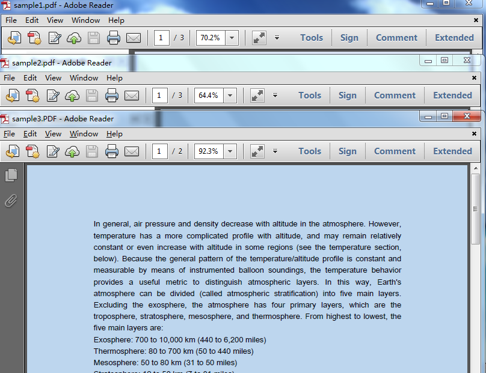
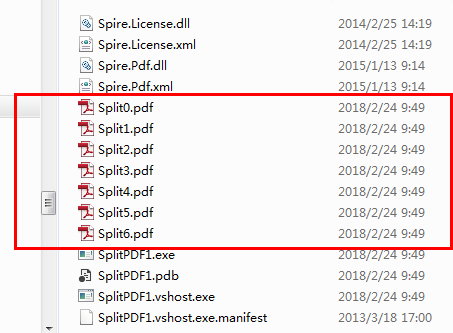
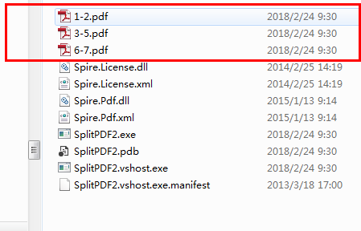

Operate PDF files in C#—How to merge and split PDF files
Introduction
In this sample, we will see how to merge multiple PDF files and split PDF file into multiple ones using Free Spire.PDF for .NET in C#.
Here we will see how to:
- Merge multiple PDF files into a new one
- Split one PDF file into multiple ones (by every page/by specifying page range)
Building the Sample
Prerequisite
Download and install Free Spire.PDF for .NET firstly and don’t forget to reference the Spire.PDF.dll into your Visual Studio project.

1. Merge PDF files into a new one
Before

After

2. Split one PDF file into multiple ones
2.1 split by every page
Before

After

2.2 split by specifying page range

Visit here for more samples about MERGE.
More information
About Free Spire.PDF for .NET:
Free Spire.PDF for .NET is a Community Edition of the Spire.PDF for .NET, which is a totally free PDF component for commercial and personal use. As a standalone C#/VB.NET component, Free Spire.PDF for .NET enables developers to create, write, edit, convert, print, handle and read PDF files on any .NET applications.
Using this free .NET PDF library, you can implement rich capabilities to create PDF files from scratch or process existing PDF documents. Many rich features can be supported, such as security setting, PDF text/ image extracting, PDF merge/split, metadata update, section and paragraph optimizing, graph/image drawing and inserting, table creation and processing, PDF printing and importing data etc.
Useful links
Website: https://code.msdn.microsoft.com/Operate-PDF-files-in-CHow-092b8f9e/https://www.e-iceblue.com/